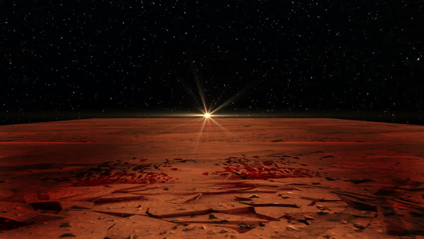

Mars: De Rode Planeet

Deze website gaat over de planeet Mars.
Al decennia lang fascineert de planeet Mars wetenschappers en geïnteresseerden in astronomie. En met goede reden: Van alle planeten in ons zonnestelsel is Mars de planeet die het meeste weg heeft van de aarde.